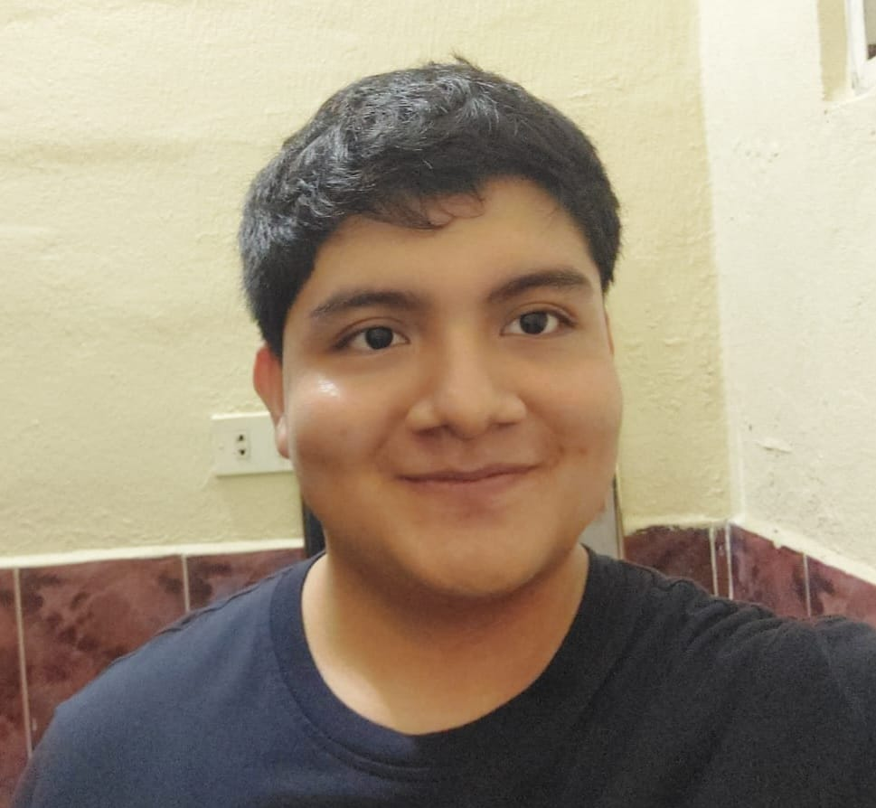

Meta 1: Aprender desarrollo web
Mi primera meta es aprender a crear páginas web utilizando HTML y comprender cómo se estructura correctamente un sitio web.

Soy estudiante y me interesa aprender sobre tecnología y desarrollo web Me gusta conocer nuevas herramientas digitales y aprender cómo funcionan. Actualmente estoy estudiando Ingeniería en Inteligencia Artificial y Robótica en la UFG. Aunque este curso no está directamente relacionado con mi carrera, me interesa y siempre me ha atraído conocer cómo se programa una página web y todo lo que conlleva el desarrollo web. Este curso me ha ayudado, en el poco tiempo que llevo, a comprender cómo funciona una página web y me ha motivado a seguir aprendiendo sobre el tema. Este curso de Desarrollo Web Full Stack es para mí una oportunidad de aprender, ampliar mis conocimientos cada día y seguir capacitándome en el mundo de la tecnología y el desarrollo web.
Mi primera meta es aprender a crear páginas web utilizando HTML y comprender cómo se estructura correctamente un sitio web.
Mi segunda meta es mejorar mis conocimientos de programación, aprender a utilizar GitHub y desarrollar proyectos que me permitan adquirir experiencia en tecnología.